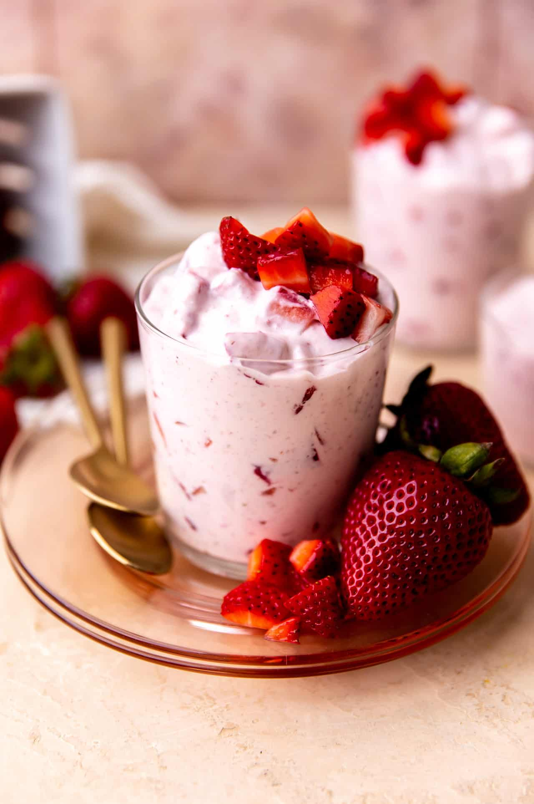

Fresas Con Crema

Description
After a delicious bandeja paisa with a refreshing Brazilian lemonade, this dessert
is the cherry on top to a perfect meal. You get your vitamin C and calcium in
the aesthetically presented fresas con crema, or strawberries with cream. Start
making yours now:
Ingredients (four servings)
- 1 Cup of Sour Cream
- 1/2 Cup of Condensed Milk
- 2 Tablespoons of Evaporated Milk
- 1 Teaspoon of Vanilla Extract
- 2 Cups of Fresh Diced Strawberries
- Combine sour cream, sweetened condensed milk, evaporated
milk, and vanilla extract in a large bowl. Gently fold in diced strawberries.
- Divide strawberry mixture into 2 serving dishes. Refrigerate for 1 hour for flavors to meld.